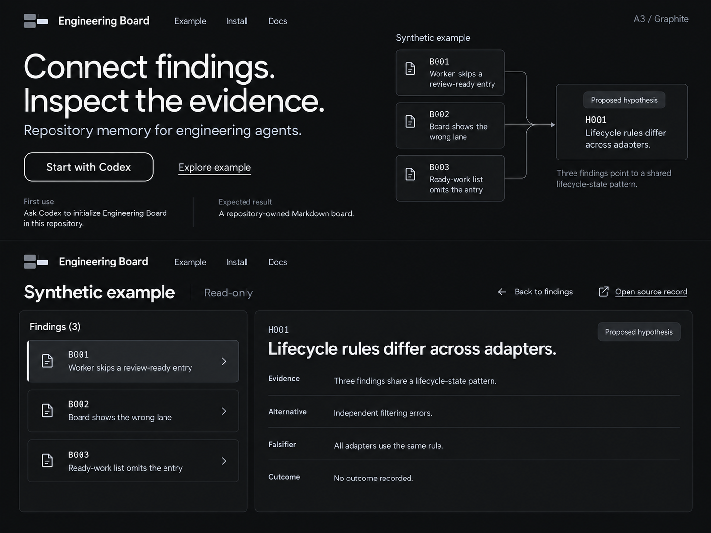
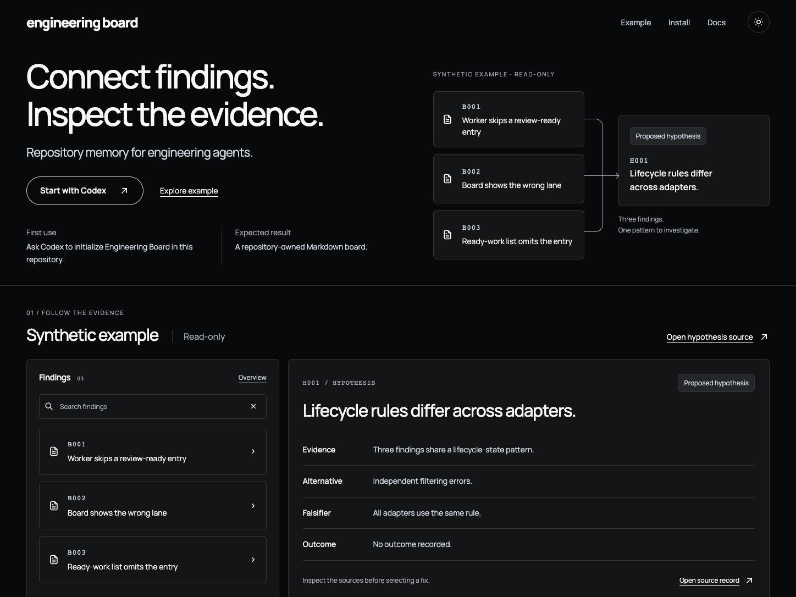

<!doctype html><html lang="en"><meta charset="utf-8"><title>Graphite design comparison</title>
<style>body{margin:16px;background:#202124;color:#fff;font:16px system-ui}main{display:grid;grid-template-columns:1448px 1448px;gap:24px}figure{margin:0}figcaption{height:56px;line-height:1.5}img{display:block;width:1448px;height:1086px}</style>
<main><figure><figcaption>Layout reference: A3 Graphite. Wordmark-only identity supersedes the block mark.<br>1448 × 1086; two conceptual screens.</figcaption></figure><figure><figcaption>Implemented home page: one masthead, integrated example and added search.<br>1448 × 1086; desktop default state.</figcaption></figure></main></html>
